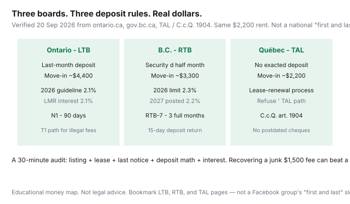

Housing · Canada
Tenant rights that save Canadians money: deposits, increases, and illegal charges
Canadians “know they have rights” the way they know they should floss. The money is in translating three files — deposits, increases, illegal fees — into a 30-minute audit once a year. Ontario is not B.C. B.C. is not Québec. A national “first and last” slogan is how you overpay $1,100 in Burnaby or hand a Montréal lessor a deposit article 1904 does not allow.
This hub points at official boards and the deeper how-tos on this site. It is not legal advice and not a reason to stay in an unsafe unit to win an argument.
Disclosure: There is no natural affiliate product in a tenant-rights map. Saving Optimizer does not claim LTB, RTB, TAL, clinic, or landlord-software partnerships. Use the provincial board or a licensed advisor for a dispute.
Key takeaways
- Big three: deposits (do not overpay), increases (check the form and the %), illegal fees (write, then the board).
- Ontario LTB · B.C. RTB · Québec TAL. Bookmark those three before you bookmark a Facebook group.
- On $2,200 rent: Ontario move-in ~$4,400; B.C. ~$3,300; Québec ~$2,200. 2026 ON guideline 2.1%; BC limit 2.3%.
- Exempt Ontario units lose the amount cap, not the notice clock. Deposit rules generally still apply.
- Recovering a junk $1,500 fee can beat moving. Harassment is not a spreadsheet — leave.
The big three savings levers: deposits, increases, illegal fees
Deposits are cash you park or never should have sent. Ontario’s lawful security category is last-month rent, with 2026 interest at the 2.1% guideline. B.C. caps a security deposit at half of the first month (optional pet damage deposit: another half, total, not per pet). Québec: Civil Code 1904 / TAL — a lessor may not exact extra months or a deposit. Depth: ON vs B.C. vs Québec move-in cash, Ontario fee cheat sheet, B.C. deposits.
Increases are the annual invoice. Check form, days, 12-month clock, and percentage. Ontario 2026: 2.1% and N1 validity. B.C. 2026: 2.3% and RTB-7. Then negotiate inside that frame.
Illegal fees are application, holding, key-money, and damage-deposit add-ons. Ontario’s rental-offences material flags extra fees. B.C. RTB: no application-processing fee. Québec: extra amounts besides rent are the problem category. Write once. Then the board path (Ontario T1 themes; B.C. withholding/RTB; Québec TAL).

Which provincial board applies to you (LTB / RTB / TAL)
| Province | Board | Start here |
|---|---|---|
| Ontario | Landlord and Tenant Board (Tribunals Ontario) | tribunalsontario.ca/ltb · ontario.ca rent increases |
| B.C. | Residential Tenancy Branch | gov.bc.ca residential tenancies · rent increases |
| Québec | Tribunal administratif du logement | tal.gouv.qc.ca · C.c.Q. art. 1904 |
A 30-minute annual tenancy audit checklist
- Find the lease, the last increase notice, and every e-transfer for move-in cash (10 minutes).
- Recompute the deposit against the provincial cap. Flag anything above last-month / half-month / first month (5 minutes).
- Recompute the last increase: form, days, 12-month clock, percentage vs 2.1% or 2.3% if those statutes apply (10 minutes).
- List open repairs you have already requested in writing. They are negotiation chips, not a speech (3 minutes).
- Write one email if money is owed or a notice is defective. Calendar the board’s time limit if you will file (2 minutes).
Do this the month the notice arrives, not the month it bites. Interest on an Ontario last-month deposit is easy to forget: $2,200 × 2.1% = $46.20 for a 2026 due date.
How rights differ if your unit is exempt from rent control
Ontario post–15 November 2018 occupancy can remove the amount cap. Notice and spacing generally remain. Deposits and junk-fee rules generally remain. B.C.’s published annual limit is a different design — manufactured-home parks and some housing types sit outside the residential 2.3% worksheet. Québec never imported the Ontario N1. If you are exempt, comps and a walk-away do more work; see the Ontario hunter explainer.
Roommate and subtenant complications (high-level)
The person on the lease is usually the person the board will talk to. Informal roommates can be guests in the statute’s eyes. Sublets and assignments have provincial forms and consent rules — Québec’s 2024 assignment changes are why you should not follow a 2019 blog. This paragraph will not sort a messy house-share. If money is jointly paid, keep a ledger. If only one name is on the lease, that name carries the increase and the deposit fight.
When to escalate vs negotiate
Negotiate when the notice is painful but possibly lawful and you want to stay: smaller number, later date, hydro included. Escalate when the fee is extra, the form is wrong, or the percentage is over a published cap. Safety, illegal lockouts, and harassment are escalate-or-leave, not a spreadsheet. Clinics exist because forms are fiddly and landlords sometimes ignore email.
Resource list of official pages to bookmark
- Ontario: Residential rent increases; Renting in Ontario: your rights; LTB forms N1/N2/T1; rental housing offences.
- B.C.: Residential tenancies hub; Rent increases; Tenancy deposits and fees; Form RTB-7; RTB-27 inspections.
- Québec: TAL English portal; Paying the rent; Civil Code art. 1904; Éducaloi public explainers.
- On this site: deposits, N1, B.C. 2.3%, pushback scripts, hunting without scams.
Sources & date stamps
- Tribunals Ontario / LTB — board home and forms (used 20 Sep 2026).
- Ontario.ca, Residential rent increases — 2026 guideline 2.1%.
- Government of B.C., Residential tenancies; rent increases 2.3% / 2027 2.2%; deposits half-month (deposits page updated 4 Mar 2026).
- TAL (tal.gouv.qc.ca/en); Civil Code of Québec, art. 1904.
Frequently asked questions
Which tenant board applies in Ontario, B.C., and Québec?
Ontario: Landlord and Tenant Board (Tribunals Ontario). B.C.: Residential Tenancy Branch. Québec: Tribunal administratif du logement (TAL). Other provinces have their own boards — do not paste an N1 onto a Halifax lease.
What deposit rules save the most move-in cash?
On a labelled $2,200 rent: Ontario last-month deposit means about $4,400 to move in; B.C. caps security at half a month (~$3,300 with first month); Québec generally does not allow a lessor to exact a deposit (Civil Code art. 1904), so first month is the typical lawful ask. Application and holding fees are a refuse in all three.
What are the 2026 rent-increase headlines in Ontario and B.C.?
Ontario guideline 2.1% for covered units, usually on Form N1 with 90 days. B.C. residential limit 2.3% (2027 already posted at 2.2%) on Form RTB-7 with three full months. Québec uses a lease-renewal / TAL process, not those percentages.
How do rights change if my unit is exempt from rent control?
In Ontario, many units first occupied after 15 November 2018 have no guideline cap on the amount, but still need proper notice and 12-month spacing. Deposit and illegal-fee rules generally still apply. B.C.’s published limit is a different statute. Confirm coverage; this is not a ruling on your address.
Is this legal advice?
No. It is a money-first map to official boards. Disputes need the provincial tribunal or a licensed advisor. Safety issues are not a spreadsheet — leave if you need to.